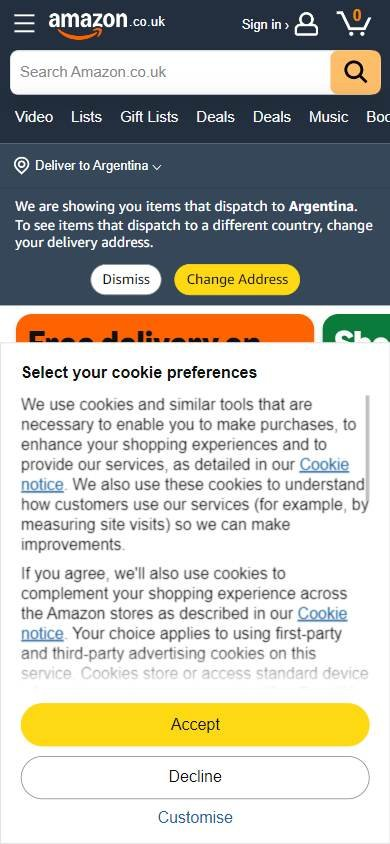
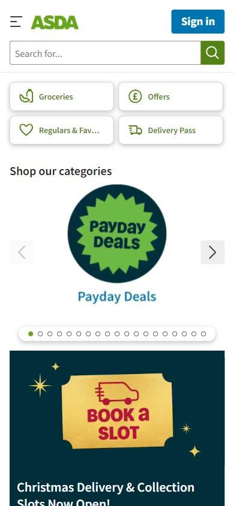
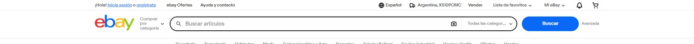

Tienda online que compite por buen precio
Los seleccionados
Los tres sitios más visitados de Reino Unido, según estadísticas de tráfico.
En resumen: lo que hacen los líderes
La pantalla de inicio de cada uno


Estilo visual
Colores, imágenes, tipografía y cuánta información muestran.
Tu estilo visual debería…
- Categorías en círculos con foto y un color de acento para botones.
Lo que tienen en común: Interfaces claras con un color de marca y fotos de producto, muchas veces dentro de círculos.
La paleta de cada uno
Medida sobre la primera pantalla. Los colores de marca salen del header; el resto muestra cuánto espacio ocupa cada color.
Así lo resuelve cada uno
Ficha comparativa
| Aspecto | Amazon Reino Unido | Asda | eBay Reino Unido |
|---|---|---|---|
| Paleta | Variada: tarjetas multicolor | Acotada: verde + azul oscuro + amarillo | Acotada: blanco + azul |
| Imágenes | Fotos de producto medianas | Fotos de producto en círculos | Foto grande + fotos en círculos |
| Esquinas | Rectas | Redondeadas | Redondeadas |
| Densidad | Alta | Media | Media |
Header
La franja de arriba con el logo y los accesos.
Tu header debería…
- Botones «Registrarse» (con borde) e «Ingresar» (relleno) a la derecha.
Lo que tienen en común: Logo a la izquierda, buscador en el centro y cuenta a la derecha; Asda usa dos botones para registrarse e ingresar.
Así lo resuelve cada uno


Ficha comparativa
| Aspecto | Amazon Reino Unido | Asda | eBay Reino Unido |
|---|---|---|---|
| Fondo | Negro | Blanco | Blanco |
| Logo | A la izquierda | Verde, a la izquierda | Multicolor, a la izquierda |
| A la derecha | Cuenta, pedidos y cesta | «Register» (borde) y «Sign in» (azul) | Accesos chicos arriba y carrito |
| Arriba | — | Enlaces chicos: About, Store locator, Help | Enlaces chicos de cuenta y ayuda |
Buscador
La barra para buscar.
Tu buscador debería…
- Botón de búsqueda dentro de un cuadrado del color de tu marca.
Lo que tienen en común: Buscador blanco con la lupa o el botón dentro de un bloque del color de la marca.
Así lo resuelve cada uno

Ficha comparativa
| Aspecto | Amazon Reino Unido | Asda | eBay Reino Unido |
|---|---|---|---|
| Estilo | Blanco con selector y lupa en cuadrado naranja | Blanco con borde y lupa en cuadrado verde | Blanco con borde, selector y botón azul «Buscar» |
| Tamaño | Muy ancho | Mediano, centrado | Muy ancho |
Menú y categorías
Cómo se organizan las secciones.
Tu menú y categorías debería…
- Debajo del menú, una fila de promociones del momento con ícono.
Lo que tienen en común: Un acceso a todo el catálogo y, debajo, una fila de promociones o temas del momento con ícono.
Así lo resuelve cada uno


Ficha comparativa
| Aspecto | Amazon Reino Unido | Asda | eBay Reino Unido |
|---|---|---|---|
| Formato | «All» con ícono de menú + accesos | Secciones con desplegables + fila de promos con íconos | Fila de categorías en texto |
Primera pantalla
Lo primero que se ve debajo del header.
Tu primera pantalla debería…
- Categorías como círculos con foto, y botones de acción en un color de acento (amarillo).
Lo que tienen en común: Categorías con imágenes en círculo o tarjetas de color, y botones de acción en un color de acento.
Así lo resuelve cada uno

Ficha comparativa
| Aspecto | Amazon Reino Unido | Asda | eBay Reino Unido |
|---|---|---|---|
| Formato | Grilla de tarjetas de color | Círculos de categorías con fotos + tarjetas de servicio | Banner con foto + franja de confianza + categorías en círculos |
| Color | Muy colorido | Verde de marca y amarillo para botones | Foto + blanco |